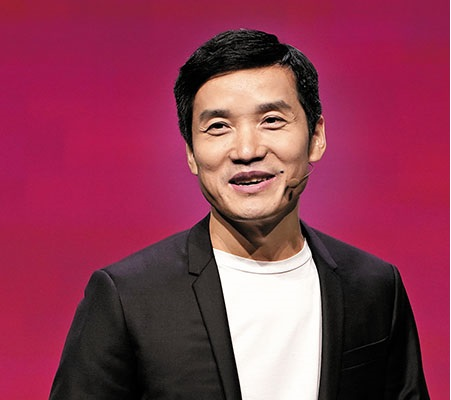

CEO da OnePlus afirmou que a empresa vai focar na melhoria das câmeras
O CEO da fabricante OnePlus, Pete Lau, afirmou que a empresa vai focar na melhoria do desempenho de câmeras nos próximos smartphones da marca. A mensagem foi publicada em seu perfil pessoal na rede social chinesa Weibo.
Segundo Lau, a OnePlus vai destinar boa parte da verba para o setor de pesquisa e desenvolvimento em 2021 em busca de "ser a número um do mundo em função da imagem". Não há maiores detalhes sobre a quantidade de dinheiro investido ou quais tecnologias serão aprimoradas internamente. Em modelos mais recentes, recursos de fotografia da companhia já eram bastante elogiados: a câmera do OnePlus 8 Pro passou em testes feitos em junho de 2020 as rivais do Galaxy S20+ e iPhone 11 Pro no site de avaliações DxOMark.
Entretanto, as novidades não devem surgir já no próximo smartphone top de linha da companhia, que provavelmente será chamado de OnePlus 9. O modelo está previsto para ser anunciado ainda no início deste ano. Caso siga o cronograma recente, entretanto, a fabricante ainda deve revelar uma versão OnePlus 9T no segundo semestre — e ela já pode conter ao menos alguns dos frutos desse novo investimento em câmeras.

 +244 945 324 234
+244 945 324 234